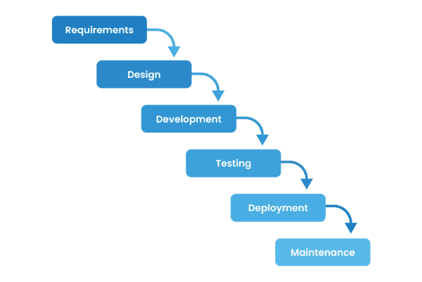
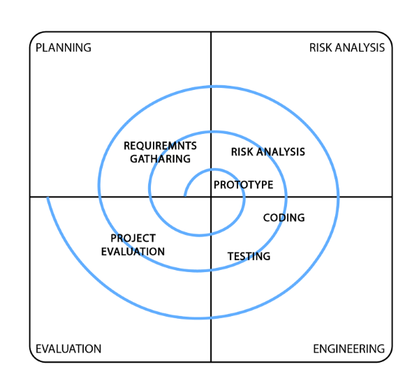
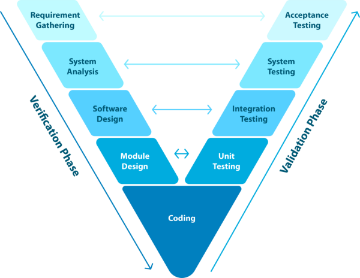

| CN | EN |
|---|---|
| 瀑布模型 | Waterfall |
| 原型模型 | Prototype |
| 增量模型 | Incremental |
| 喷泉模型 | Fountain |
| 螺旋模型 | Spiral |
| V 模型 | Verification and Validation Model |
| 迭代模型 | Iterative |
| 统一过程 | RUP |
| 敏捷开发模型 | Agile |


制定计划
风险分析
开发实施
用户评估
螺旋模型：步步为营，消灭风险；风险驱动/先想怎么不死
敏捷冲刺：小步快跑，快速交付；价值驱动/先想怎么交付功能

原型模型侧重于“探索需求”
V 模型侧重于“验证质量”
迭代模型侧重于“分步完善”